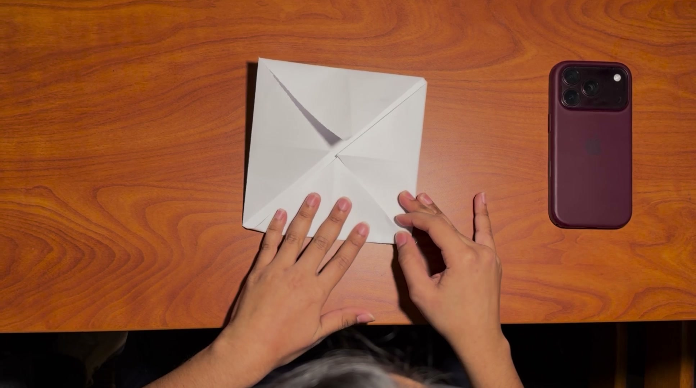
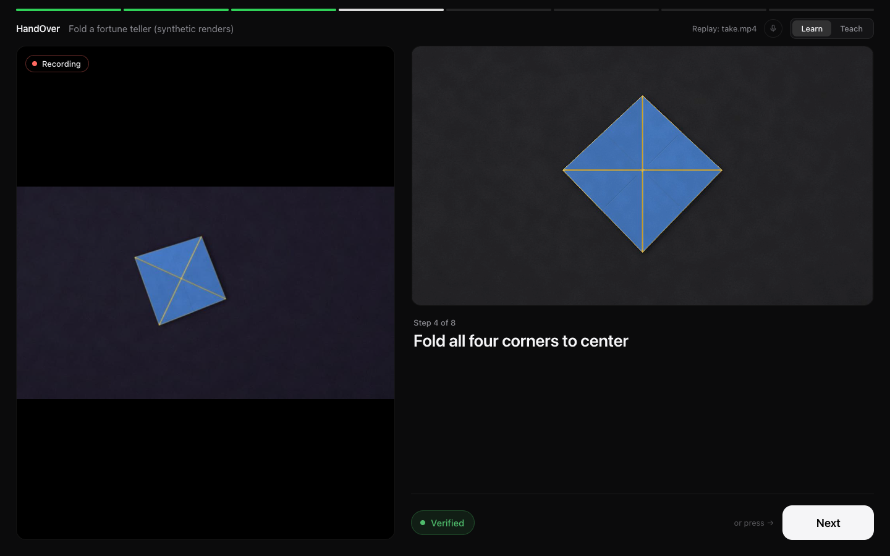
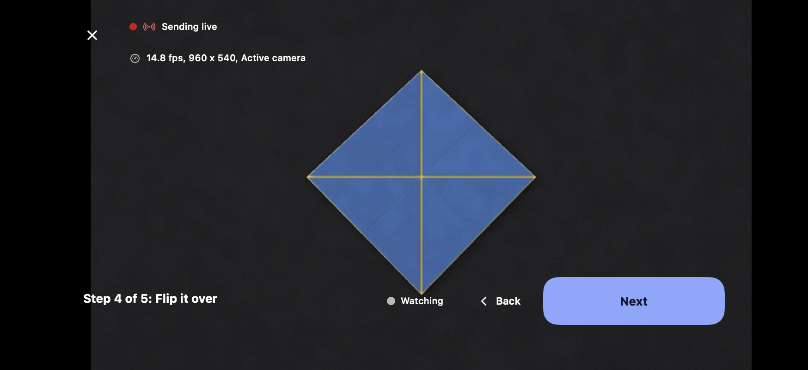

HandOver
A how-to video that waits for you.
Open source. Local hub. Any camera.

Record once.
Teach it again.
- 01
Record
Capture the expert doing the real work.
- 02
Build
HandOver cuts the take into playable steps.
- 03
Learn
The next step waits until the learner is ready.
It watches the work,
not the clock.
Expert and learner stay side by side. The camera can verify a finished step. Next always works.

One local session
Phone, Mac,
or Meta glasses.
Scan the Mac. Start the camera. Every screen follows the same lesson.
01 / 03
Scan once.
The phone finds the local hub.
HandOverScan to connectWaiting for iPhone
Ready to scanBe the cameraConnect

Built for the workbench
Local where it matters.
Camera frames stay in memory. Accounts are optional. Analytics never blocks the lesson.
Read the privacy model ↗